Section8.1Graphical and Numerical Solutions to Differential Equations
In Section 5.1, we were introduced to the idea of a differential equation. Given a function \(y = f(x)\text{,}\) we defined a differential equation as an equation involving \(y,
x\text{,}\) and derivatives of \(y\text{.}\) We explored the simple differential equation \(\yp = 2x\text{,}\) and saw that a solution to a differential equation is simply a function that satisfies the differential equation.
To find a solution, we must find a function whose derivative is \(2x\text{.}\) In other words, we seek an antiderivative of \(2x\text{.}\) The function
\begin{equation*}
y = x^2
\end{equation*}
is an antiderivative of \(2x\text{,}\) and solves the differential equation. So do the functions
\begin{equation*}
y = x^2 + 1
\end{equation*}
and
\begin{equation*}
y = x^2 - 2346\text{.}
\end{equation*}
We call the function
\begin{equation*}
y = x^2 + C\text{,}
\end{equation*}
with \(C\) an arbitrary constant of integration, the general solution to the differential equation.
In order to specify the value of the integration constant \(C\text{,}\) we require additional information. For example, if we know that \(y(1) = 3\text{,}\) it follows that \(C=2\text{.}\) This additional information is called an initial condition.
Definition8.1.3.Initial Value Problem.
A differential equation paired with an initial condition (or initial conditions) is called an initial value problem.
The solution to an initial value problem is called a particular solution. A particular solution does not include arbitrary constants.
The family of solutions to a differential equation that encompasses all possible solutions is called the general solution to the differential equation.
The solution is a function \(y\) such that differentiation yields twice the original function. Unlike our starting example, finding the solution here does not involve computing an antiderivative. Notice that “integrating both sides” would yield the result \(y = \int 2y\,dx\text{,}\) which is not useful. Without knowledge of the function \(y\text{,}\) we can't compute the indefinite integral. Later sections will explore systematic ways to find analytic solutions to simple differential equations. For now, a bit of thought might let us guess the solution
\begin{equation*}
y = e^{2x}\text{.}
\end{equation*}
Notice that application of the chain rule yields \(\yp = 2e^{2x} = 2y\text{.}\) Another solution is given by
\begin{equation*}
y = -3e^{2x}\text{.}
\end{equation*}
In fact,
\begin{equation*}
y = Ce^{2x}\text{,}
\end{equation*}
where \(C\) is any constant, is the general solution to the differential equation because \(\yp = 2Ce^{2x} = 2y\text{.}\)
If we are provided with a single initial condition, say \(y(0) = 3/2\text{,}\) we can identify \(C=3/2\) so that
\begin{equation*}
y = \frac{3}{2}e^{2x}
\end{equation*}
is the particular solution to the initial value problem
Figure 8.1.5 shows various members of the general solution to the differential equation \(\displaystyle \yp = 2y\text{.}\) Each \(C\) value yields a different member of the family, and a different function. We emphasize the particular solution corresponding to the initial condition \(y(0)=3/2\text{.}\)
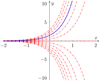
Figure8.1.5.A representation of some of the members of general solution to the differential equation \(\yp = 2y\text{,}\) including the particular solution to the initial value problem with \(y(0)=\displaystyle 3/2\text{,}\) from Example 8.1.4
We seek a function whose second derivative is negative 9 multiplied by the original function. Both \(\sin(3x)\) and \(\cos(3x)\) have this feature. The general solution to the differential equation is given by
\begin{equation*}
y = C_1\sin(3x) + C_2\cos(3x)\text{,}
\end{equation*}
where \(C_1\) and \(C_2\) are arbitrary constants. To fully specify a particular solution, we require two additional conditions. For example, the initial conditions \(y(0)=1\) and \(\yp(0)=3\) yield \(C_1 = C_2 = 1\text{.}\)
The differential equation in Example 8.1.6 is second order, because the equation involves a second derivative. In general, the number of initial conditions required to specify a particular solution depends on the order of the differential equation. For the remainder of the chapter, we restrict our attention to first order differential equations and first order initial value problems.
Example8.1.7.Verifying a solution to the differential equation.
Which of the following is a solution to the differential equation
Verifying a solution to a differential equation is simply an exercise in differentiation and simplification. We substitute each potential solution into the differential equation to see if it satisfies the equation.
Testing the potential solution \(y = C \left ( 1 + \ln(x) \right )^2\text{:}\)
Differentiating, we have \(\displaystyle \yp = \frac{2C(1 + \ln(x))}{x}\text{.}\) Substituting into the differential equation,
The solution in this example is called an implicit solution. That means the dependent variable \(y\) is a function of \(x\text{,}\) but has not been explicitly solved for. Verifying the solution still involves differentiation, but we must take the derivatives implicitly. Differentiating, we have
We have verified that \(x^2+y^2 = Cy\) is a solution to \(\displaystyle \yp = \frac{2xy}{x^2-y^2}\text{.}\)
Subsection8.1.2Graphical Solutions to Differential Equations
In the examples we have explored so far, we have found exact forms for the functions that solve the differential equations. Solutions of this type are called analytic solutions. Many times a differential equation has a solution, but it is difficult or impossible to find the solution analytically. This is analogous to algebraic equations. The algebraic equation \(x^2 + 3x - 1 = 0\) has two real solutions that can be found analytically by using the quadratic formula. The equation \(\cos(x) = x\) has one real solution, but we can't find it analytically. As shown in Figure 8.1.9, we can find an approximate solution graphically by plotting \(\cos(x)\) and \(x\) and observing the \(x\)-value of the intersection. We can similarly use graphical tools to understand the qualitative behavior of solutions to a first order-differential equation.
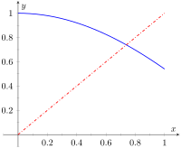
Figure8.1.9.Graphically finding an approximate solution to \(\cos(x) = x\)
The function \(f\) could be any function of the two variables \(x\) and \(y\text{.}\) Written in this way, we can think of the function \(f\) as providing a formula to find the slope of a solution at a given point in the \(xy\)-plane. In other words, suppose a solution to the differential equation passes through the point \((x_0,y_0)\text{.}\) At the point \((x_0,y_0)\text{,}\) the slope of the solution curve will be \(f(x_0,y_0)\text{.}\) Since this calculation of the slope is possible at any point \((x,y)\) where the function \(f(x,y)\) is defined, we can produce a plot called a slope field (or direction field) that shows the slope of a solution at any point in the \(xy\)-plane where the solution is defined. Further, this process can be done purely by working with the differential equation itself. In other words, we can draw a slope field and use it to determine the qualitative behavior of solutions to a differential equation without having to solve the differential equation.
Definition8.1.10.Slope Field.
A slope field for a first-order differential equation \(\yp = f(x,y)\) is a plot in the \(xy\)-plane made up of short line segments or arrows. At each point \((x_0,y_0)\) where \(f(x,y)\) is defined, the slope of the line segment is given by \(f(x_0,y_0)\text{.}\) Plots of solutions to a differential equation are tangent to the line segments in the slope field.
Example8.1.11.Sketching a slope field.
Find a slope field for the differential equation \(\displaystyle \yp = x+y\text{.}\)
Because the function \(f(x,y) = x+y\) is defined for all points \((x,y)\text{,}\) every point in the \(xy\)-plane has an associated line segment. It is not practical to draw an entire slope field by hand, but many tools exist for drawing slope fields on a computer. Here, we explicitly calculate a few of the line segments in the slope field.
The slope of the line segment at \((0,0)\) is \(f(0,0) = 0 + 0 = 0\text{.}\)
The slope of the line segment at \((1,1)\) is \(f(1,1) = 1 + 1 = 2\text{.}\)
The slope of the line segment at \((1,-1)\) is \(f(1,-1) = 1 - 1 = 0\text{.}\)
The slope of the line segment at \((-2,-1)\) is \(f(-2,-1) = -2 - 1 = -3\text{.}\)
Though it is possible to continue this process to sketch a slope field, we usually use a computer to make the drawing. Most popular computer algebra systems can draw slope fields. There are also various online tools that can make the drawings. The slope field for \(\yp = x+y\) is shown in Figure 8.1.12.
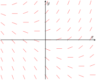
Figure8.1.12.Slope field for \(\yp = x+y\) from Example 8.1.11
Example8.1.13.A graphical solution to an initial value problem.
Approximate, with a sketch, the solution to the initial value problem \(\displaystyle \yp = x+y\text{,}\) with \(y(1)=-1\text{.}\)
The solution to the initial value problem should be a continuous smooth curve. Using the slope field, we can draw of a sketch of the solution using the following two criteria:
The solution must pass through the point \((1,-1)\text{.}\)
When the solution passes through a point \((x_0,y_0)\) it must be tangent to the line segment at \((x_0,y_0)\text{.}\)
Essentially, we sketch a solution to the initial value problem by starting at the point \((1,-1)\) and “following the lines” in either direction. A sketch of the solution is shown in Figure 8.1.14.
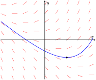
Figure8.1.14.Solution to the initial value problem \(\yp = x+y\text{,}\) with \(y(1)=-1\) from Example 8.1.13
Example8.1.15.Using a slope field to predict long term behavior.
Use the slope field for the differential equation \(\yp = y(1-y)\text{,}\) shown in Figure 8.1.16, to predict long term behavior of solutions to the equation.
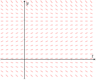
Figure8.1.16.Slope field for the logistic differential equation \(\yp = y(1-y)\) from Example 8.1.15
This differential equation, called the logistic differential equation, often appears in population biology to describe the size of a population. For that reason, we use \(t\) (time) as the independent variable instead of \(x\text{.}\) We also often restrict attention to non-negative \(y\)-values because negative values correspond to a negative population.
Looking at the slope field in Figure 8.1.16, we can predict long term behavior for a given initial condition.
If the initial \(y\)-value is negative (\(y(0)\lt 0\)), the solution curve must pass though the point \((0,y(0))\) and follow the slope field. We expect the solution \(y\) to become more and more negative as time increases. Note that this result is not physically relevant when considering a population.
If the initial \(y\)-value is greater than 0 but less than 1, we expect the solution \(y\) to increase and level off at \(y=1\text{.}\)
If the initial \(y\)-value is greater than 1, we expect the solution \(y\) to decrease and level off at \(y=1\text{.}\)
The slope field for the logistic differential equation, along with representative solution curves, is shown in Figure 8.1.17. Notice that any solution curve with positive initial value will tend towards the value \(y=1\text{.}\) We call this the carrying capacity.
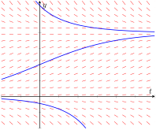
Figure8.1.17.Slope field for the logistic differential equation \(\yp = y(1-y)\) from Example 8.1.15 with a few representative solution curves
Subsection8.1.3Numerical Solutions to Differential Equations: Euler's Method
While the slope field is an effective way to understand the qualitative behavior of solutions to a differential equation, it is difficult to use a slope field to make quantitative predictions. For example, if we have the slope field for the differential equation \(\yp = x+y\) from Example 8.1.11 along with the initial condition \(y(0)=1\text{,}\) we can understand the qualitative behavior of the solution to the initial value problem, but will struggle to predict a specific value, \(y(2)\) for example, with any degree of confidence. The most straightforward way to predict \(y(2)\) is to find the analytic solution to the the initial value problem and evaluate it at \(x=2\text{.}\) Unfortunately, we have already mentioned that it is impossible to find analytic solutions to many differential equations. In the absence of an analytic solution, a numerical solution can serve as an effective tool to make quantitative predictions about the solution to an initial value problem.
There are many techniques for computing numerical solutions to initial value problems. A course in numerical analysis will discuss various techniques along with their strengths and weaknesses. The simplest technique is called Euler's Method.
This notation can be confusing at first, but “\(y(x)\)” simply means “the \(y\)-value of the solution when the \(x\)-value is \(x\)”, and “\(y(x+h)\)” means “the \(y\)-value of the solution when the \(x\)-value is \(x+h\)”.
If we remove the limit but restrict \(h\) to be “small,” we have
This statement says that if we know the solution (\(y\)-value) to the initial value problem for some given \(x\)-value, we can find an approximation for the solution at the value \(x+h\) by taking our \(y\)-value and adding \(h\) times the function \(f\) evaluated at the \(x\) and \(y\) values. Euler's method uses the initial condition of an initial value problem as the starting point, and then uses the above idea to find approximate values for the solution \(y\) at later \(x\)-values. The algorithm is summarized in Key Idea 8.1.18.
Key Idea8.1.18.Euler's Method.
Consider the initial value problem
\begin{equation*}
\yp = f(x,y) \text{ with } y(x_0)=y_0\text{.}
\end{equation*}
Let \(h\) be a small positive number and \(N\) be an integer.
This process yields a sequence of \(N+1\) points \((x_i,y_i)\) for \(i= 0,1,2,\ldots,N\text{,}\) where \((x_i, y_i)\) is an approximation for \((x_i,y(x_i))\text{.}\)
Let's practice Euler's Method using a few concrete examples.
Example8.1.19.Using Euler's Method 1.
Find an approximation at \(x=2\) for the solution to \(\yp = x + y\) with \(y(1)=-1\) using Euler's Method with \(h=0.5\text{.}\)
Our initial condition yields the starting values \(x_0 = 1\) and \(y_0 = -1\text{.}\) With \(h = 0.5\text{,}\) it takes \(N=2\) steps to get to \(x=2\text{.}\) Using steps 1 and 2 from the Euler's Method algorithm,
Using Euler's method, we find the approximate \(y(2) \approx -0.75\text{.}\)
To help visualize the Euler's method approximation, these three points (connected by line segments) are plotted along with the analytical solution to the initial value problem in Figure 8.1.20.
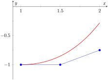
Figure8.1.20.Euler's Method approximation to \(\yp = x + y\) with \(y(1) = -1\) from Example 8.1.19, along with the analytical solution to the initial value problem
This approximation doesn't appear terrific, though it is better than merely guessing. Let's repeat the previous example using a smaller \(h\)-value.
Example8.1.21.Using Euler's Method 2.
Find an approximation on the interval \([1,2]\) for the solution to \(\yp = x + y\) with \(y(1)=-1\) using Euler's Method with \(h=0.25\text{.}\)
Our initial condition yields the starting values \(x_0 = 1\) and \(y_0 = -1\text{.}\) With \(h = 0.25\text{,}\) we need \(N=4\) steps on the interval \([1,2]\) Using steps 1 and 2 from the Euler's Method algorithm (and rounding to 4 decimal points), we have
Using Euler's method, we find \(y(2) \approx -0.5586\text{.}\)
These five points, along with the points from Example 8.1.19 and the analytic solution, are plotted in Figure 8.1.22.
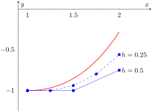
Figure8.1.22.Euler's Method approximations to \(\yp = x + y\) with \(y(1) = -1\) from Examples 8.1.19 and Example 8.1.21, along with the analytical solution
Using the results from Examples 8.1.19 and Example 8.1.21, we can make a few observations about Euler's method. First, the Euler approximation generally gets worse as we get farther from the initial condition. This is because Euler's method involves two sources of error. The first comes from the fact that we're using a positive \(h\)-value in the derivative approximation instead of using a limit as \(h\) approaches zero. Essentially, we're using a linear approximation to the solution \(y\) (similar to the process described in Section 4.4 on Differentials.) This error is often called the local truncation error. The second source of error comes from the fact that every step in Euler's method uses the result of the previous step. That means we're using an approximate \(y\)-value to approximate the next \(y\)-value. Doing this repeatedly causes the errors to build on each other. This second type of error is often called the propagated or accumulated error.
A second observation is that the Euler approximation is more accurate for smaller \(h\)-values. This accuracy comes at a cost, though. Example 8.1.21 is more accurate than Example 8.1.19, but takes twice as many computations. In general, numerical algorithms (even when performed by a computer program) require striking a balance between a desired level of accuracy and the amount of computational effort we are willing to undertake.
Let's do one final example of Euler's Method.
Example8.1.23.Using Euler's Method 3.
Find an approximation for the solution to the logistic differential equation
\(\yp = y(1-y)\) with \(y(0) = 0.25\text{,}\) for \(0 \leq y \leq 4\text{.}\) Use \(N = 10\) steps.
The logistic differential equation is what is called an autonomous equation. An autonomous differential equation has no explicit dependence on the independent variable (\(t\) in this case). This has no real effect on the application of Euler's method other than the fact that the function \(f(t,y)\) is really just a function of \(y\text{.}\) To take steps in the \(y\) variable, we use
These 11 points, along with the the analytic solution, are plotted in Figure 8.1.24. Notice how well they seem to match the true solution.
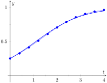
Figure8.1.24.Euler's Method approximation to \(\yp = y(1-y)\) with \(y(0) = 0.25\) from Example 8.1.23, along with the analytical solution
The study of differential equations is a natural extension of the study of derivatives and integrals. The equations themselves involve derivatives, and methods to find analytic solutions often involve finding antiderivatives. In this section, we focus on graphical and numerical techniques to understand solutions to differential equations. We restrict our examples to relatively simple initial value problems that permit analytic solutions to the equations, but we should remember that this is only for comparison purposes. In reality, many differential equations, even some that appear straightforward, do not have solutions we can find analytically. Even so, we can use the techniques presented in this section to understand the behavior of solutions. In the next two sections, we explore two techniques to find analytic solutions to two different classes of differential equations.
Exercises8.1.4Exercises
Terms and Concepts
1.
In your own words, what is an initial value problem, and how is it different than a differential equation?
2.
In your own words, describe what it means for a function to be a solution to a differential equation.
3.
How can we verify that a function is a solution to a differential equation?
4.
Describe the difference between a particular solution and a general solution.
5.
Why might we use a graphical or numerical technique to study solutions to a differential equation instead of simply solving the differential equation to find an analytic solution?
6.
Describe the considerations that should be made when choosing an \(h\) value to use in a numerical method like Euler's Method.
Problems
Exercise Group.
In the following exercises, verify that the given function is a solution to the differential equation or initial value problem.
In the following exercises, verify that the given function is a solution to the differential equation and find the \(C\) value required to make the function satisfy the initial condition.
\(y(x^2+y) = C\text{;}\)\(2xy + (x^2+2y)\yp= 0\text{,}\) with \(y(1)=2\)
Exercise Group.
In the following exercises, sketch a slope field for the given differential equation. Let \(x\) and \(y\) range between \(-2\) and \(2\text{.}\)
13.
\(\yp = y-x\)
14.
\(\yp = \displaystyle \frac{x}{2y}\)
15.
\(\yp = \sin(\pi y)\)
16.
\(\yp = \frac{y}{4}\)
Exercise Group.
Match each slope field below with the appropriate differential equation.
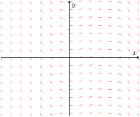
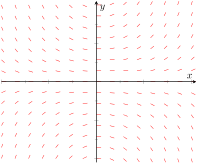
(a)
(b)
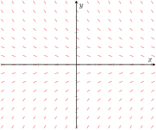
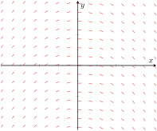
(c)
(d)
17.
\(\yp = xy\)
18.
\(\yp = -y\)
19.
\(\yp = -x\)
20.
\(\yp = x(1-x)\)
Exercise Group.
In the following exercises, sketch the slope field for the differential equation, and use it to draw a sketch of the solution to the initial value problem.
21.
\(\yp = \displaystyle \frac{y}{x} - y\text{,}\) with \(y(0.5)=1\text{.}\)
22.
\(\yp = y\sin(x)\text{,}\) with \(y(0)=1\text{.}\)
23.
\(\yp = y^2-3y+2\text{,}\) with \(y(0)=2\text{.}\)
24.
\(\displaystyle \yp = -\frac{xy}{1+x^2}\text{,}\) with \(y(0)=1\text{.}\)
Exercise Group.
In the following exercises, use Euler's Method to make a table of values that approximates the solution to the initial value problem on the given interval. Use the specified \(h\) or \(N\) value.
25.
\(\yp = x+2y\)
\(y(0)=1\)
interval: \([0,1]\)
\(h=0.25\)
26.
\(\yp = xe^{-y}\)
\(y(0)=1\)
interval: \([0,0.5]\)
\(N=5\)
27.
\(\yp = y + \sin(x)\)
\(y(0)=2\)
interval: \([0,1]\)
\(h = 0.2\)
28.
\(\yp = e^{x-y}\)
\(y(0)=0\)
interval: \([0,2]\)
\(h = 0.5\)
Exercise Group.
In the following exercises, use the provided solution \(y(x)\) and Euler's Method with the \(h=0.2\) and \(h=0.1\) to complete the following table.